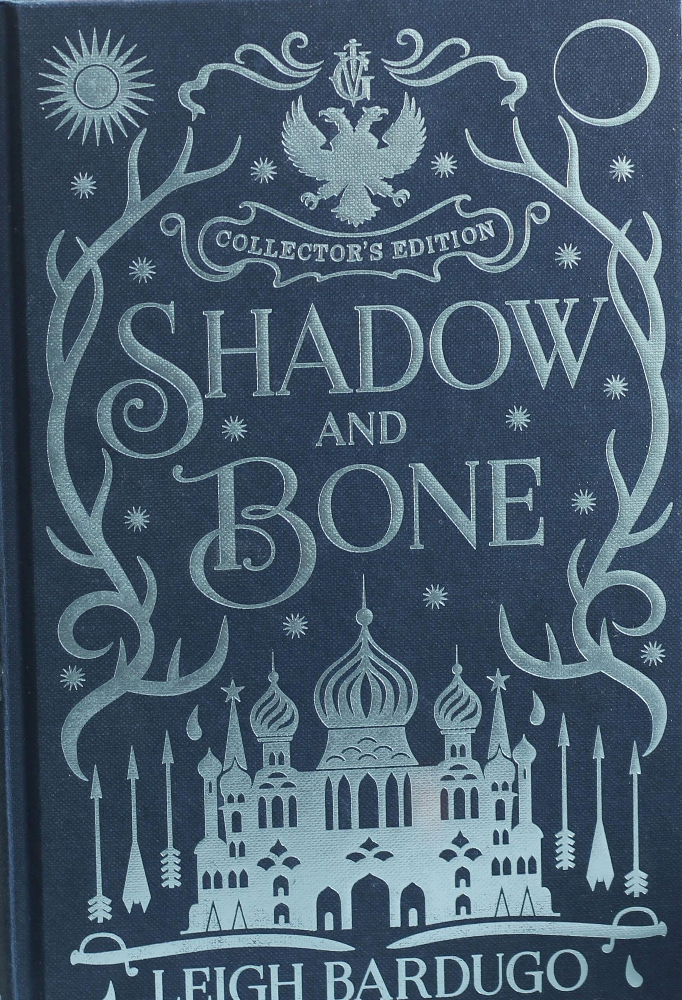

Shadow and bone
Alina Starkov’s story closely follows the structure of the classic hero’s journey
Leigh Barudo
Today . 7 min read
Alina’s journey is chronicling her transformation from a common orphan to a symbol of hope for the people of her homeland. Her own journey begins when she learns that she is the Sun Summoner after entering the unknown reaches of the Shadow Fold and unconsciously triggering a long-dormant power that she possesses when her oldest friend is attacked by the volcra. This moment coincides with the “call to adventure” and it sets off a chain of events that faithfully mirrors the steps commonly seen in the hero’s journey. This will eventually pit her against the Darkling, the enigmatic leader of the Grisha and the villain of the novel.
 Read
Read